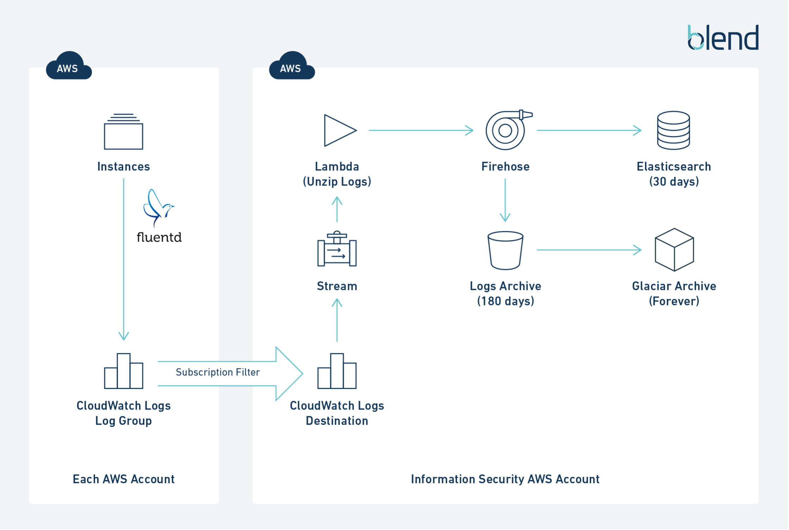
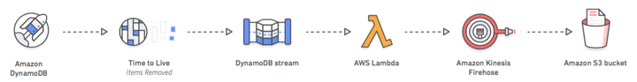

Test Report
Review questions
Jun 17, 2019 05:27AM EDT
 9 correct
9 correct 41 incorrect
41 incorrectYour answer
B. Load the cluster as soon as the administrator has the same number of files as nodes in the cluster.
C. Load the cluster when the administrator has the number of files as multiple of files relative to Cluster Slice Count, or 5 minutes, whichever comes first.
D. Load the cluster when the number of files is less than the Cluster Slice Count.
Correct answer is C as the maximum lag allowed is 5 minutes, the target should to load the files once they reach multiple of the slice count of 5 minutes whichever comes first. Loading the files in multiple of slice count provides best performance.
Refer AWS documentation - Redshift Best Practices
Amazon Redshift is an MPP (massively parallel processing) database, where all the compute nodes divide and parallelize the work of ingesting data. Each node is further subdivided into slices, with each slice having one or more dedicated cores, equally dividing the processing capacity. The number of slices per node depends on the node type of the cluster. For example, each DS2.XLARGE compute node has two slices, whereas each DS2.8XLARGE compute node has 16 slices.
When you load data into Amazon Redshift, you should aim to have each slice do an equal amount of work. When you load the data from a single large file or from files split into uneven sizes, some slices do more work than others. As a result, the process runs only as fast as the slowest, or most heavily loaded, slice.
When splitting your data files, ensure that they are of approximately equal size – between 1 MB and 1 GB after compression. The number of files should be a multiple of the number of slices in your cluster. Also, I strongly recommend that you individually compress the load files using gzip, lzop, or bzip2 to efficiently load large datasets.
When loading multiple files into a single table, use a single COPY command for the table, rather than multiple COPY commands. Amazon Redshift automatically parallelizes the data ingestion. Using a single COPY command to bulk load data into a table ensures optimal use of cluster resources, and quickest possible throughput.
Option A is wrong as files should be loaded in bulk.
Options B & D are wrong as the best practice to load the files is to match the slice count.
Your answer
B. Use Amazon S3 bucket replication to consolidate log entries and build a single model in Oregon.
C. Use Kinesis as a buffer for web logs and replicate logs to the Kinesis stream of a neighboring region.
D. Use the CloudWatch Logs agent to consolidate logs into a single CloudWatch Logs group.
Correct answer is D as the resources can point to a CloudWatch logs destination to consolidate the logs using Subscription filters.
Refer documentation - Article and CrossAccountSubscribtions

You can collaborate with an owner of a different AWS account and receive their log events on your AWS resources, such as a Amazon Kinesis stream (this is known as cross-account data sharing). For example, this log event data can be read from a centralized Amazon Kinesis stream to perform custom processing and analysis. Custom processing is especially useful when you collaborate and analyze data across many accounts. For example, a company's information security group might want to analyze data for real-time intrusion detection or anomalous behaviors so it could conduct an audit of accounts in all divisions in the company by collecting their federated production logs for central processing. A real-time stream of event data across those accounts can be assembled and delivered to the information security groups who can use Kinesis to attach the data to their existing security analytic systems.
Option A is wrong as it would put the onus on application
Option B is wrong as it should work with S3 cross region replication but would duplicate the data.
Option C is wrong as Kinesis cannot be used to replicate logs across region and it would need custom client applications or Lambda.
Your answer
B. Publish messages to Amazon Kinesis Streams. Pull messages off Streams with Spark Streaming in parallel to AWS Lambda pushing messages from Streams to Firehose backed by Amazon Simple Storage Service (S3).
C. Publish messages to Amazon Kinesis Firehose backed by Amazon Simple Storage Service (S3). Use AWS Lambda to pull messages from Firehose to Streams for processing with Spark Streaming.
D. Publish messages to Amazon Kinesis Streams, pull messages off with Spark Streaming, and write row data to Amazon Simple Storage Service (S3) before and after processing.
Correct answer is B as the data can be capture by Kinesis Streams. Kinesis Streams can feed data to Spark Streaming for analysis and Lambda to move the raw data to S3 for durable storage.
Refer AWS documentation - Streaming Pipeline
Your answer
B. Store the files in S3 Standard with a lifecycle policy to transition the storage class to Standard - IA after three months. After a year, transition the files to Glacier and add a Deny Delete vault lock policy for archives less than seven years old.
C. Store the files in S3 Standard with lifecycle policies to transition the storage class to Standard – IA after three months and delete them after a year. Simultaneously store the files in Amazon Glacier with a Deny Delete vault lock policy for archives less than seven years old.
D. Store the files in S3 Standard with a lifecycle policy to remove them after a year. Simultaneously store the files in Amazon S3 Glacier with a Deny Delete vault lock policy for archives less than seven years old.
Correct answer is C as there are two aspects to this question: setting up a lifecycle policy to ensure that objects are stored in the most cost-effective storage, and ensuring that the regulatory control is met. The lifecycle policy will store the objects on S3 Standard during the three months of active use, and then move the objects to S3 Standard – IA when access will be infrequent. The Deny Delete vault lock policy will ensure that the regulatory policy is met, but that policy must be applied over the entire lifecycle of the object, not just after it is moved to Glacier after the first year. Option C has the Deny Delete vault lock applied over the entire lifecycle of the object and is the right answer.
Refer AWS documentation - Glacier Vault Lock Policy
An Amazon S3 Glacier (Glacier) vault can have one resource-based vault access policy and one Vault Lock policy attached to it. A Vault Lock policy is a vault access policy that you can lock. Using a Vault Lock policy can help you enforce regulatory and compliance requirements.
Option A is wrong as as the objects needs to be stored for instant access for 3 months and then moved to an infrequent access storage and then for archival
Option B is wrong as it might not meet the regulatory control as the deny is applied for the entire period.
Option D is wrong as the files are infrequently accessed after 3 months and can be moved to S3-IA.
Your answer
B. EMR running Apache Spark
C. Kinesis Firehose and Redshift
D. EMR using Hive
Correct answer is C as Kinesis Firehose can capture the data and store the in data in Redshift. Redshift can provide processing of huge structured data.
Refer AWS documentation - Kinesis Firehose
Amazon Kinesis Data Firehose is the easiest way to reliably load streaming data into data stores and analytics tools. It can capture, transform, and load streaming data into Amazon S3, Amazon Redshift, Amazon Elasticsearch Service, and Splunk, enabling near real-time analytics with existing business intelligence tools and dashboards you’re already using today. It is a fully managed service that automatically scales to match the throughput of your data and requires no ongoing administration. It can also batch, compress, transform, and encrypt the data before loading it, minimizing the amount of storage used at the destination and increasing security.
Option A is wrong as RDS is not an ideal choice for big data analytics.
Options B & D are wrong as EMR processing would need to be managed.
AWS BDS-C00 Question feedbackYour answer
B. Binary classification model, where the two classes are the require-response post and does-not-require-response
C. Multi-class prediction model, with two classes: require-response post and does-not-require-response
D. Regression model where the predicted value is the probability that the post requires a response
Correct answer is A as the labels are missing, a Binary classification model with a required response post can be applied.
Option B is wrong as B would require both the labels to classify the data
Options C & D are wrong as the model are not ideal for classification.
Points : 5 out of 5
Your answer
B. Use a multipart upload to transfer the data over the existing link.
C. Set up an AWS Direct Connect link to upload the data.
D. Configure a VPN tunnel for the AWS environment to upload the data.
Correct answer is A as with 900TB of data and 80% of 100Mbps line, it would take years to transfer the data. Snowball provides a quick and cost effective option to transfer huge data from on-premises to AWS S3.
Refer AWS documentation - Snowball
Snowball is a petabyte-scale data transport solution that uses devices designed to be secure to transfer large amounts of data into and out of the AWS Cloud. Using Snowball addresses common challenges with large-scale data transfers including high network costs, long transfer times, and security concerns. Customers today use Snowball to migrate analytics data, genomics data, video libraries, image repositories, backups, and to archive part of data center shutdowns, tape replacement or application migration projects. Transferring data with Snowball is simple, fast, more secure, and can be as little as one-fifth the cost of transferring data via high-speed Internet.
Options B & D are wrong as the transfer is still done through internet.
Option C is wrong as Direct Connect needs time to setup and is not that cost effective for one time data transfer.
Points : 5 out of 5
Your answer
B. Define a Primary Key with StreamName as Partition Key and TimeStamp followed by ServerName as Sort Key. Define a Global Secondary Index with ServerName as partition key and TimeStamp followed by StreamName.
C. Define a Primary Key with ServerName as Partition Key. Define a Local Secondary Index with StreamName as Partition Key. Define a Global Secondary Index with TimeStamp as Partition Key.
D. Define a Primary Key with ServerName as Partition Key. Define a Local Secondary Index with TimeStamp as Partition Key. Define a Global Secondary Index with StreamName as Partition Key and TimeStamp as Sort Key.
Correct answer is B as you can use composite primary keys using a combination of (StreamName as the partition key and TimeStamp as the sort key) and (ServerName as the partition key and TimeStamp as the sort key) which would provide the ability to query on both StreamName and ServerName over a time.
Option A is wrong as there is no way of querying for StreamName
Options C & D are wrong Local Secondary Index needs to have the same partition key and only sort key can differ. Also, it does not allow to query for ServerName OR StreamName over time.
AWS BDS-C00 Question feedbackYour answer
B. Establish a Direct Connect link between the on-premises system and the AWS region to reduce latency. Have the EMR cluster read the data directly from the on-premises storage system over Direct Connect.
C. Encrypt the data files according to encryption standards of Country X and store them on AWS region in Amazon S3. Have the EMR cluster read the dataset using EMRFS.
D. Use AWS Import/Export Snowball device to securely transfer the data to the AWS region and copy the files onto an EBS volume. Have the EMR cluster read the dataset using EMRFS.
Correct answer is A as the latency is high it would be ideal to transfer the data to AWS and process using EMR and EMRFS. Also, anonymizing the data would help meet the legal requirement.
Option B is wrong as EMR cannot access the data from on-premises directly. It still needs to be loaded to HDFS which would be in the AWS region.
Option C is wrong as it still does not meet the legal requirements as the data is moved out of the country, even though it is encrypted it can be accessed.
Option D is wrong as EBS volumes are not an ideal storage for huge dataset and EMR cluster cannot read the data from EBS volumes.
Points : 5 out of 5
Your answer
B. Create an Amazon S3 bucket. Specify a "Deny" bucket policy on this bucket to block "s3:DeleteObject".
C. Create an Amazon Glacier Vault. Specify a "Deny" vault access policy on this Vault to block "glacier:DeleteArchive".
D. Create secondary AWS Account containing an Amazon S3 bucket. Grant "s3:PutObject" to the primary account.
Correct answer is A as Glacier provides Vault Lock Policy which can be used to prevent an action on the Vault.
Refer AWS documentation - Glacier Vault Lock Policy
An Amazon S3 Glacier (Glacier) vault can have one resource-based vault access policy and one Vault Lock policy attached to it. A Vault Lock policy is a vault access policy that you can lock. Using a Vault Lock policy can help you enforce regulatory and compliance requirements.
As an example of a Vault Lock policy, suppose that you are required to retain archives for one year before you can delete them. To implement this requirement, you can create a Vault Lock policy that denies users permissions to delete an archive until the archive has existed for one year. You can test this policy before locking it down. After you lock the policy, the policy becomes immutable.
{
"Version":"2012-10-17",
"Statement":[
{
"Sid": "deny-based-on-archive-age",
"Principal": "*",
"Effect": "Deny",
"Action": "glacier:DeleteArchive",
"Resource": [
"arn:aws:glacier:us-west-2:123456789012:vaults/examplevault"
]
}
]
}
Options B & D are wrong as S3 is not ideal solution for archival
Option C is wrong as you need to use Vault Lock Policy and not Vault Access Policy. An Amazon S3 Glacier vault access policy is a resource-based policy that you can use to manage permissions to your vault.
Points : 5 out of 5
Your answer
B. Enable DynamoDB Streams and use the KCL with the DynamoDB Streams Kinesis Adapter to capture changes on DynamoDB tables.
C. Create rolling tables on DynamoDB to store data in a particular order and create custom application logic to handle the creation and deletion of tables.
D. Create a custom AWS Lambda function to regularly poll the DynamoDB Stream and deliver the batch records to an Amazon Kinesis Data Firehose.
E. Create Amazon CloudWatch Events when a new item is added to the DynamoDB table. Invoke an AWS Lambda function to capture the changes and write to Amazon Kinesis Data Streams.
F. Create an Amazon Kinesis Data Firehose delivery stream to load the data into Amazon S3 and set lifecycle policies to archive it to Amazon Glacier.
D. Create a custom AWS Lambda function to regularly poll the DynamoDB Stream and deliver the batch records to an Amazon Kinesis Data Firehose.
F. Create an Amazon Kinesis Data Firehose delivery stream to load the data into Amazon S3 and set lifecycle policies to archive it to Amazon Glacier.
Correct answers are A, D & F.
Option A as TTL would enable DynamoDB data expiration without any additional cost.
Option D as Lambda can be configured to poll DynamoDB Streams for new items (i.e TTL expired) and push to Kinesis Firehose.
Option F as Kinesis Data Firehose can load the data into S3 and lifecycle can move to Glacier for archival.
Refer AWS Blog Post - DynamoDB Archival using Lambda and Kinesis

Above solution to remove older items from a DynamoDB table and archive them to S3 without having to manage a fleet of servers (see the following simplified workflow diagram). You use TTL to automatically delete old items and DynamoDB Streams to capture the TTL-expired items. You then connect DynamoDB Streams to Lambda, which lets you run code without provisioning or managing any servers. When new items are added to the DynamoDB stream (that is, as TTL deletes older items), the Lambda function triggers, writing the data to an Amazon Kinesis Firehose delivery stream. Firehose provides a simple, fully managed solution to load the data into S3, which is the archive.
- Activate TTL and DynamoDB Streams on your DynamoDB table.
- Create a Firehose delivery stream to load the data into S3.
- Create a Lambda function to poll the DynamoDB stream and deliver batch records from streams to Firehose.
- Validate that the application works.
Option B is wrong as this will include all the changes and it would be real time.
Option C is wrong as rolling tables require pre-creating tables to store data for particular months/weeks/days. This requires custom application logic to handle creating and deleting tables, and switching of reads and writes to new tables which would not be cost effective.
Option E is wrong as CloudWatch Events do not track DynamoDB tables at data level.
Your answer
B. Use the sentiment analysis NLP library to determine whether a post requires a response.
C. Use the Amazon Mechanical Turk web service to publish Human Intelligence Tasks that ask Turk workers to label the posts.
D. Using the a priori probability distribution of the two classes, use Monte-Carlo simulation to generate the labels.
C. Use the Amazon Mechanical Turk web service to publish Human Intelligence Tasks that ask Turk workers to label the posts.
Correct answers are A & C as you need accurate data to train the service and get accurate results from future data.
Options B & D are wrong as it would end up training an ML model using the output from a different machine learning model and therefore would significantly increase the possible error rate. It is extremely important to have a very low error rate (if any!) in your training set, and therefore human-validated or assured labels are essential.
Your answer
B. Run fewer instances for a shorter amount of time.
C. Run fewer instances for a longer amount of time.
D. Run more instances for a shorter amount of time.
Correct answer is D as EMR now supports instances with per second billing, it would be more cost efficient and performant to use more instances for shorter amount of time.
Refer AWS documentation - Per-Second Billing
Amazon EMR – Our customers add capacity to their EMR clusters in order to get their results more quickly. With per-second billing for the EC2 instances in the clusters, adding nodes is more cost-effective than ever. To learn more, read Amazon EMR Now Supports Per-Second Billing.
Option A is wrong as On-demand instances would not be cost effective.
Options B & C are wrong as they are not performant.
Your answer
B. Use the log file prefix in the import/export manifest files to create a unique log file in Amazon S3 for each import.
C. Use the log file checksum in the import/export manifest files to create a unique log file in Amazon S3 for each import.
D. Use a script to iterate over files in Amazon S3 to generate a log after each import/export job.
Correct answer is B as creating a unique log file for each import would help
The AWS Import/Export process generates a log file. The log file name always ends with the phrase import-log- followed by your JobId. There is a remote chance that you already have an object with this name.To avoid a key collision, you can add an optional prefix to the log file by adding the logPrefix option in the manifest. AWS Import/Export takes the string value specified for this option and inserts it between the bucket name and log report name
The log file is a UTF-8 encoded CSV file that contains, among other things, information about each file loaded to or from your storage device. With Amazon S3 import jobs, AWS Import/Export saves the log to the same Amazon S3 bucket as your data.
For an import job, the log name ends with the phrase import-log- followed by your JOBID. For example, if the import JOBID is 53TX4, the log name ends in import-log-53TX4. By default, if you do not set logPrefix in the manifest file, a job loaded to mybucket with the JOBID of 53TX4 loads the logs to http://mybucket.s3.amazonaws.com/import-log-53TX4. If you set logPrefix to logs/, the log location is http://s3.amazonaws.com/mybucket/logs/import-log-53TX4.
Note If you have a log object with the same key name as an existing Amazon S3 object, the new log overwrites the existing object.You can use the logPrefix option to prevent object collisions.
Option A is wrong as same log file might cause an overwrite and the S3 bucket is not versioned by default.
Option C is wrong as checksum cannot be used for creating unique log files.
Option D is wrong as is not not cost-effective solution.
Your answer
B. Create a Kinesis video stream to capture, store, and index the videos from the camera-equipped home devices.
C. Transform the stream data to HLS compatible data by using Kinesis Data Analytics or customer code in EC2/Lambda. Then in the mobile application, use HLS protocol to display the video stream by using the converted HLS streaming data.
D. In the mobile application, use HLS to display the video stream by using the HLS streaming session URL.
D. In the mobile application, use HLS to display the video stream by using the HLS streaming session URL.
Correct answers are B & D as Kinesis Video Streams can be used to stream, store Videos and these videos can then be streamed back using APIs.
Refer AWS documentation - Kinesis Video Streams
Amazon Kinesis Video Streams makes it easy to securely stream video from connected devices to AWS for analytics, machine learning (ML), and other processing. Kinesis Video Streams automatically provisions and elastically scales all the infrastructure needed to ingest streaming video data from millions of devices. It also durably stores, encrypts, and indexes video data in your streams, and allows you to access your data through easy-to-use APIs. Kinesis Video Streams enables you to quickly build computer vision and ML applications through integration with Amazon Rekognition Video and libraries for ML frameworks such as Apache MxNet, TensorFlow, and OpenCV.
Kinesis Video Streams is ideal for building computer vision-enabled ML applications that are becoming prevalent in a wide range of use cases such as the following:
Smart Home - With Kinesis Video Streams, you can easily stream video and audio from camera-equipped home devices such as baby monitors, webcams, and home surveillance systems to AWS. You can then use the streams to build a variety of smart home applications ranging from simple video playback to intelligent lighting, climate control systems, and security solutions.
Option A is wrong as Kinesis Data Firehose is used for streaming data delivery rather than video streaming.
Option C is wrong as there is no need for transforming the data to HLS, if using Kinesis Video Streams.
AWS BDS-C00 Question feedbackYour answer
B. Send all the log events to Amazon Kinesis develop a client process to apply heuristics on the logs
C. Configure Amazon CloudTrail to receive custom logs, use EMR to apply heuristics the logs
D. Setup an Auto Scaling group of EC2 syslogd servers, store the logs on S3 use EMR to apply heuristics on the logs
Key point here is requiring real time analytics and ability to go back to data samples from last 12 hours
Correct answer is B as Kinesis can perform real time analysis and stores data for 24 hours which can be extended to 7 days. Also data is not removed from Kinesis till 24 hours default, can be extended, and can be used to retrieve past data
Option A is wrong as SQS is not for real time ingestion of data. Also, once the message is consume it would be deleted and not available.
SQS minimum message size is 1,024 bytes (1 KB). The maximum is 262,144 bytes (256 KB). While Kinesis can store upload 1MB
Option C is wrong as CloudTrail is only for auditing and CloudWatch can be used to collect logs
Option D is wrong as EMR is for batch analysis
Your answer
B. Apache Flink
C. Apache Phoenix
D. Apache Sqoop
E. Apache Ganglia
D. Apache Sqoop
Correct answers are C & D
Option C as Apache Phoenix is used for OLTP and operational analytics, allowing you to use standard SQL queries and JDBC APIs to work with an Apache HBase backing store.
Option D as Apache Sqoop is a tool for transferring data between Amazon S3, Hadoop, HDFS, and RDBMS databases.
Option A is wrong as Hue (Hadoop User Experience) is an open-source, web-based, graphical user interface for use with Amazon EMR and Apache Hadoop.
Option B is wrong as Apache Flink is a streaming dataflow engine that you can use to run real-time stream processing on high-throughput data sources.
Option E is wrong as Apache Ganglia open source project is a scalable, distributed system designed to monitor clusters and grids while minimizing the impact on their performance.
AWS BDS-C00 Question feedbackYour answer
B. Amazon Rekognition
C. Amazon Polly
D. Amazon SageMaker
Correct answer is B as Amazon Rekognition makes it easy to add image and video analysis to your applications. You just provide an image or video to the Rekognition API, and the service can identify objects, people, text, scenes, and activities. It can detect any inappropriate content as well. Amazon Rekognition also provides highly accurate facial analysis and facial recognition. You can detect, analyze, and compare faces for a wide variety of use cases, including user verification, cataloging, people counting, and public safety.
Option A is wrong as Amazon Comprehend uses natural language processing (NLP) to extract insights about the content of documents.
Option C is wrong as Amazon Polly is a cloud service that converts text into lifelike speech. You can use Amazon Polly to develop applications that increase engagement and accessibility.
Option D is wrong as Amazon SageMaker is a fully managed machine learning service. With Amazon SageMaker, data scientists and developers can quickly and easily build and train machine learning models, and then directly deploy them into a production-readyhosted environment.
Your answer
B. Build a Kinesis Streams process that captures and marks the relevant items in the dangerous goods reports using a Lambda function, once more than two reports have been filed.
C. Build a machine learning model to properly classify dangerous goods and run it on the DynamoDB Streams as every new item description is added to the system.
D. Build a machine learning model with binary classification for dangerous goods and run it on the DynamoDB Streams as every new item description is added to the system.
Correct answer is C as there is data already to learn, a machine learning model can be developed to properly classify the goods and run it with DynamoDB Streams.
Refer AWS documentation - Sample Similar Implementation
Option A is wrong as regular expressions would only do matches which are not reliable
Option B is wrong as the function would not work on new or similar data but only on data already reported.
Option D is wrong as binary classification would help classify into 1 or 0.
Your answer
B. Create a Local Secondary Index with a partition key of timestamp and a sort key of userId.
C. Create a Local Secondary Index with a partition key of userId and a sort key of timestamp.
D. Create a Global Secondary Index with a partition key of timestamp and a sort key of userId.
Correct answer is A as they want to query on users in different times, it would be best to create a Global Secondary Index using userId as partition key and timestamp as sort key.
Refer AWS documentation - DynamoDB Secondary Indexes
Options B & C are wrong as Local Secondary Index needs to have the same partition key as the base table. Also, Local Secondary Index can be created only during table creation.
Option D is wrong as the GSI needs to be created using userId as partition key and timestamp as sort key.
AWS BDS-C00 Question feedbackPoints : 5 out of 5
Your answer
B. Conduct the analysis on a cluster of Amazon EC2 instances using Reserved Instances in a single AWS Region.
C. Store weather forecast data in Amazon S3 Standard. Configure a lifecycle policy to transition the data to Amazon S3 Standard-Infrequent Access (S3 Standard-IA) after 30 days.
D. Store weather forecast data in Amazon S3 One Zone-Infrequent Access (S3 One Zone-IA). Configure a lifecycle policy to transition the data to Amazon Glacier after 90 days.
E. Store weather forecast data in Amazon S3 Standard-Infrequent Access (S3 Standard-IA). Configure a lifecycle policy to transition the data to Amazon Glacier after 90 days.
D. Store weather forecast data in Amazon S3 One Zone-Infrequent Access (S3 One Zone-IA). Configure a lifecycle policy to transition the data to Amazon Glacier after 90 days.
Correct answers are B & D
Option B as the job runs for 50 mins within an hour with a sustained usage of around 20 hours of the 24 hours.
Option D as the focus is on most cost effective architecture, S3 One Zone-IA would be an ideal option as the data is used only during the first hour.
Refer AWS documentation - S3 Storage Classes & Pricing
Option A is wrong as the usage is sustained Reserved instances would be more reliable and cost effective as compared to Spot blocks.
Option C is wrong as Standard and S3 Standard-IA would not provide the most cost effective option.
Option E is wrong as Standard-IA would not provide the most cost effective option as compared to S3 One Zone-IA
Your answer
B. When the administrator needs to reduce cross-node traffic.
C. When the administrator needs to optimize the fact table for parity with the number of slices.
D. When the administrator needs to balance data distribution and collocation data.
E. When the administrator needs to take advantage of data locality on a local node for joins and aggregates.
D. When the administrator needs to balance data distribution and collocation data.
E. When the administrator needs to take advantage of data locality on a local node for joins and aggregates.
Correct answers are B, D & E. With key-based distribution, the rows are distributed according to the values in one column. The leader node places matching values on the same node slice. If you distribute a pair of tables on the joining keys, the leader node collocates the rows on the slices according to the values in the joining columns so that matching values from the common columns are physically stored together.
Refer AWS documentation - Redshift Distribution Styles
Option A is wrong as DISTSTYLE ALL tables are most appropriate for smaller, slowly changing dimension tables.
Option C is wrong as key distribution impact the number of slices. KEY requires a single column to be defined as a DISTKEY. On ingest, Amazon Redshift hashes each DISTKEY column value, and route hashes to the same slice consistently.
AWS BDS-C00 Question feedbackYour answer
B. Use Elastic MapReduce to ingest the data and analyze it.
C. Use Amazon Kinesis with a worker to process the data received from the Kinesis stream.
D. Send click events directly to Amazon Redshift and then analyze them with SQL.
Correct answer is C as the click streams can be captured using Kinesis with a Kinesis client to process the data. Kinesis Streams is a completely managed service.
Refer AWS documentation - Kinesis Streams FAQ
Amazon Kinesis Data Streams enables you to build custom applications that process or analyze streaming data for specialized needs. You can continuously add various types of data such as clickstreams, application logs, and social media to an Amazon Kinesis data stream from hundreds of thousands of sources. Within seconds, the data will be available for your Amazon Kinesis Applications to read and process from the stream.
Amazon Kinesis Data Streams manages the infrastructure, storage, networking, and configuration needed to stream your data at the level of your data throughput. You do not have to worry about provisioning, deployment, ongoing-maintenance of hardware, software, or other services for your data streams. In addition, Amazon Kinesis Data Streams synchronously replicates data across three availability zones, providing high availability and data durability.
Options A, B & D are wrong as they do not provide real time handling.
AWS BDS-C00 Question feedbackYour answer
B. Enable CloudTrail logging to a centralized S3 bucket, set a lifecycle policy to move the data to Glacier after 90 days, and expire the data after 3 years.
C. Enable CloudTrail logging to Glacier, and set a lifecycle policy to expire the data after 3 years.
D. Enable CloudTrail logging in all accounts into S3 buckets, and set a lifecycle policy to expire the data in each bucket after 3 years.
Correct answer is B as the CloudTrail logging can be directed to a centralized S3 bucket. Lifecycle policies on the bucket can help to transition the data to low cost archival storage i.e. Glacier after 90 days and expire after 3 years.
Refer AWS documentation - S3 Object Lifecycle Management & CloudTrail FAQs
AWS CloudTrail is a web service that records activity made on your account and delivers log files to your Amazon S3 bucket.
Applying a trail to all regions refers to creating a trail that will record AWS account activity in all regions. This setting also applies to any new regions that are added.
You can create and manage a trail across all regions in the partition in one API call or few clicks. You will receive a record of account activity made in your AWS account across all regions to one S3 bucket or CloudWatch logs log group. When AWS launches a new region, you will receive the log files containing event history for the new region without taking any action.
To manage your objects so that they are stored cost effectively throughout their lifecycle, configure their lifecycle. A lifecycle configuration is a set of rules that define actions that Amazon S3 applies to a group of objects. There are two types of actions:
- Transition actions—Define when objects transition to another storage class. For example, you might choose to transition objects to the STANDARD_IA storage class 30 days after you created them, or archive objects to the GLACIER storage class one year after creating them.There are costs associated with the lifecycle transition requests.
- Expiration actions—Define when objects expire. Amazon S3 deletes expired objects on your behalf.
Option A is wrong as the lifecycle policies do not meet the requirement.
Option C is wrong as CloudTrail cannot deliver to Glacier directly.
Option D is wrong as the data can be kept into different S3 per region, however it is more cumbersome to manage and also its not most cost-effective as data can be moved to Glacier after 90 days.
Your answer
B. Configure auto-replication between Amazon Redshift and Amazon RDS. Data scientists use Redshift and Dashboards use RDS
C. Use Amazon Redshift for both requirements, with separate query queues configured in workload management.
D. Use Amazon Redshift for Data Scientists; Run automated dashboard queries against Redshift and store the results in Amazon ElastiCache, Dashboards query ElastiCache.
Correct answer is C as Redshift provides workload management which can help prioritize the interactive and long running jobs. Storing the data in a single storage service would also help keep the costs to minimum.
Refer AWS documentation - Mixed workload with Redshift
Mixed workloads run batch and interactive workloads (short-running and long-running queries or reports) concurrently to support business needs or demand. Typically, managing and configuring mixed workloads requires a thorough understanding of access patterns, how the system resources are being used and performance requirements.
It’s common for mixed workloads to have some processes that require higher priority than others. Sometimes, this means a certain job must complete within a given SLA. Other times, this means you only want to prevent a non-critical reporting workload from consuming too many cluster resources at any one time.
Without workload management (WLM), each query is prioritized equally, which can cause a person, team, or workload to consume excessive cluster resources for a process which isn’t as valuable as other more business-critical jobs.
You can use WLM to define the separation of business concerns and to prioritize the different types of concurrently running queries in the system:
- Interactive: Software that accepts input from humans as it runs. Interactive software includes most popular programs, such as BI tools or reporting applications.
- Short-running, read-only user queries such as Tableau dashboard query with low latency requirements.
- Long-running, read-only user queries such as a complex structured report that aggregates the last 10 years of sales data.
- Batch: Execution of a job series in a server program without manual intervention (non-interactive). The execution of a series of programs, on a set or “batch” of inputs, rather than a single input, would instead be a custom job.
- Batch queries includes bulk INSERT, UPDATE, and DELETE transactions, for example, ETL or ELT programs.
Options A & B are wrong as it would result in duplication of data and with 2 services costs would not be minimal.
Option D is wrong as ElastiCache would not provide the latest data.
Your answer
B. $1.50 per hour
C. $1.35 per hour
D. $0
Correct answer is C as EMR starts charging when 90% of the capacity is available, which is $1.35 (90 * $0.015 per hour)
Refer AWS documentation - EMR FAQs
Q: When does billing of my Amazon EMR cluster begin and end?
Billing commences when Amazon EMR starts running your cluster. You are only charged for the resources actually consumed. For example, let’s say you launched 100 Amazon EC2 Standard Small instances for an Amazon EMR cluster, where the Amazon EMR cost is an incremental $0.015 per hour. The Amazon EC2 instances will begin booting immediately, but they won’t necessarily all start at the same moment. Amazon EMR will track when each instance starts and will check it into the cluster so that it can accept processing tasks.
In the first 10 minutes after your launch request, Amazon EMR either starts your cluster (if all of your instances are available) or checks in as many instances as possible. Once the 10 minute mark has passed, Amazon EMR will start processing (and charging for) your cluster as soon as 90% of your requested instances are available. As the remaining 10% of your requested instances check in, Amazon EMR starts charging for those instances as well.
So, in the above example, if all 100 of your requested instances are available 10 minutes after you kick off a launch request, you’ll be charged $1.50 per hour (100 * $0.015) for as long as the cluster takes to complete. If only 90 of your requested instances were available at the 10 minute mark, you’d be charged $1.35 per hour (90 * $0.015) for as long as this was the number of instances running your cluster. When the remaining 10 instances checked in, you’d be charged $1.50 per hour (100 * $0.015) for as long as the balance of the cluster takes to complete.
Each cluster will run until one of the following occurs: you terminate the cluster with the TerminateJobFlows API call (or an equivalent tool), the cluster shuts itself down, or the cluster is terminated due to software or hardware failure.
Your answer
B. A pie chart per region plotting customer contacts per day of week
C. A map of regions with a heatmap overlay to show the volume of customer contacts
D. A bar graph plotting region vs. volume of social media contacts
Correct answer is A as the main requirement is to track the customer contacts over a period of 6 months, a line graph with customer contacts vs. time would meet the requirement.
Option B is wrong as pie chart is not a right representation as they do not show changes over time.
Option C is wrong as it does not provide the region and time.
Option D is wrong as it just provides a volume but does not provide it over time.
AWS BDS-C00 Question feedbackPoints : 5 out of 5
Your answer
B. Split the file into 500 smaller files.
C. Convert the file format to AVRO.
D. Split the file into 10 files of equal size.
Correct answer is B as the critical aspect of this question is running the COPY command with the maximum amount of parallelism. It will have a greater effect because it will allow Amazon Redshift to load multiple files per instance in parallel (COPY can process one file per slice on each node)
Refer AWS documentation - Redshift Best Practices - Loading Data
Split Your Load Data into Multiple Files - The COPY command loads the data in parallel from multiple files, dividing the workload among the nodes in your cluster. When you load all the data from a single large file, Amazon Redshift is forced to perform a serialized load, which is much slower. Split your load data files so that the files are about equal size, between 1 MB and 1 GB after compression. For optimum parallelism, the ideal size is between 1 MB and 125 MB after compression. The number of files should be a multiple of the number of slices in your cluster.
Options A & C are wrong as Compressing the files is a recommended practice and will also increase performance, but not to the same extent as loading multiple files in parallel.
Option D is wrong as even though it will also load files in parallel i.e. one file per node, which will increase performance, however not as much as Option B.
Your answer
B. Create a new IAM group for AWS Data Pipeline users with a trust policy that contains partner AWS account IDs.
C. Configure an Amazon S3 bucket policy for the "click-data" bucket that allows Read-Only access to the objects and associate this policy with an IAM role.
D. Configure the Amazon S3 bucket access control list to allow access to the partners Amazon Elastic MapReduce cluster.
E. Configure AWS Data Pipeline to transfer the data from the ''click-data" bucket to the partner's Amazon Elastic MapReduce cluster.
F. Configure AWS Data Pipeline in the partner AWS accounts to use the web Identity Federation API to access data in the "click-data" bucket.
C. Configure an Amazon S3 bucket policy for the "click-data" bucket that allows Read-Only access to the objects and associate this policy with an IAM role.
Correct answer are A & C. As the access needs to secure, the data should be sent to the partner account. An IAM cross account role can be created for the AWS partner account with a external ID for security and an S3 bucket policy can be created to allow only read access and associate it with an IAM role.
Your answer
B. Call the S3 CompareObjects API for the source and destination objects.
C. Place a HEAD request against the source and destination objects comparing SIG v4.
D. Compare the size of the source and destination objects.
Correct answer is A as S3 stores the MD5 digest of the object data which can be verify to ensure the object contents have not changed.
Refer AWS documentation - S3 Response Headers & S3 Data Integrity
ETag | The entity tag is a hash of the object. The ETag reflects changes only to the contents of an object, not its metadata. The ETag may or may not be an MD5 digest of the object data. Whether or not it is depends on how the object was created and how it is encrypted as described below:
|
Options B, C & D are wrong as they do not enable verify the object data integrity.
Points : 5 out of 5
Your answer
B. The ACLs on the bucket are preventing the JavaScript from loading the file.
C. The bucket policies are preventing the JavaScript from loading the file.
D. The IAM role you used to create and upload the JSON data in the S3 bucket is preventing the JavaScript from loading the file.
Correct answer is A as CORS in S3 needs to be enabled for the application to be able to access the files.
Refer AWS documentation - S3 CORS
Cross-origin resource sharing (CORS) defines a way for client web applications that are loaded in one domain to interact with resources in a different domain. With CORS support, you can build rich client-side web applications with Amazon S3 and selectively allow cross-origin access to your Amazon S3 resources.
Options B, C & D are wrong as the file is accessible from the browser the ACLs and Bucket Policies cannot be an issue
Points : 5 out of 5
Your answer
B. Push web clicks by session to Amazon Kinesis and analyze behavior using Kinesis workers
C. Write click events directly to Amazon Redshift and then analyze with SQL
D. Publish web clicks by session to an Amazon SQS queue and periodically drain these events to Amazon RDS and analyze with SQL
Key point here is real time data capture and analytics
Correct answer is B as Kinesis helps to collect real time data capture and analyze using kinesis workers
Option A is wrong as S3 & EMR is not ideal for real time data ingestion and analytics
Option C is wrong as Redshift is not suitable for real time data ingestion and only allows jdbc/odbc data connection
Option D is wrong as SQS is not ideal for real time data ingestion. Also periodical analytics is not real time to be able to modify the behavior
AWS BDS-C00 Question feedbackYour answer
B. After receiving a request, each web server sends it to Amazon Kinesis using the Amazon Kinesis Producer Library addRecords method.
C. Each web server buffers the requests until the count reaches 500 and sends them to Amazon Kinesis using the Amazon Kinesis PutRecord API.
D. After receiving a request, each web server sends it to Amazon Kinesis using the Amazon Kinesis PutRecord API. Use the exponential back-off algorithm for retries until a successful response is received.
Correct answer is D as you can use Kinesis PutRecord to insert data into Kinesis. To handle failure of PutRecord, AWS recommends using Error Retries and Exponential Backoff in AWS.
The request rate for the stream is too high, or the requested data is too large for the available throughput. Reduce the frequency or size of your requests. For more information, see Streams Limits in the Amazon Kinesis Data Streams Developer Guide, and Error Retries and Exponential Backoff in AWS in the AWS General Reference.
Option A is wrong as AWS recommends using exponential backoff instead of loop retries.
Option B is wrong as KPL addRecords does not exist.
Option C is wrong as with batching you need to use PutRecords.
Writes multiple data records into a Kinesis data stream in a single call (also referred to as a PutRecords request). Use this operation to send data into the stream for data ingestion and processing.
Each PutRecords request can support up to 500 records. Each record in the request can be as large as 1 MiB, up to a limit of 5 MiB for the entire request, including partition keys. Each shard can support writes up to 1,000 records per second, up to a maximum data write total of 1 MiB per second.
Your answer
B. Use Amazon API Gateway to get the data feeds directly from physicians, batch them using a Spark application on Amazon Elastic MapReduce (EMR), and then store them in Amazon S3 with folders separated per physician.
C. Use Amazon S3 event notification to populate an Amazon DynamoDB table with metadata about every file loaded to Amazon S3, and partition them based on the month and year of the file.
D. Use Amazon S3 event notification to populate an Amazon Redshift table with metadata about every file loaded to Amazon S3, and partition them based on the month and year of the file.
Correct answer is C as the S3 even notification can be used to populate DynamoDB with the metadata of the file like physician, patient and date. This does not impact the current process and provides and easy way for the auditors to query the data.
Refer AWS documentation - S3 Maintain Metadata
Amazon S3 is a simple key-based object store whose scalability and low cost make it ideal for storing large datasets. Its design enables S3 to provide excellent performance for storing and retrieving objects based on a known key. Finding objects based on other attributes, however, requires doing a linear search using the LIST operation. Because each listing can return at most 1000 keys, it may require many requests before finding the object. Because of these additional requests, implementing attribute-based queries in S3 alone can be challenging.
A common solution is to build an external index that maps queryable attributes to the S3 object key. This index can leverage data repositories that are built for fast lookups but might not be great at storing large data blobs. These types of indexes provide an entry point to your data that can be used by a variety of systems.
Option A is wrong as it is not a time efficient way and would need new development with EMR cost included.
Option B is wrong as API Gateway is not an ideal interface with Spark applications.
Option D is wrong as Redshift is more an option for analytics and would not be as cost efficient as compared for DynamoDB as it is a managed service.
Your answer
B. Use a CloudFront distribution with access log delivery to S3. Clicks should be recorded as query string GETs to the distribution. Reports are built and sent by periodically running EMR jobs over the access logs in S3.
C. Use API Gateway invoking Lambdas which PutRecords into Kinesis, and EMR running Spark performing GetRecords on Kinesis to scale with spikes. Spark on EMR outputs the analysis to S3, which are sent out via email.
D. Use AWS Elasticsearch service and EC2 Auto Scaling groups. The Autoscaling groups scale based on click throughput and stream into the Elasticsearch domain, which is also scalable. Use Kibana to generate reports periodically.
Key point here is clickstream batch analysis for large global data only once per week
Correct answer is B as CloudFront is a Gigabit-Scale HTTP(S) global request distribution service and works fine with peaks higher than 10 Gbps or 15,000 RPS. It can handle scale, geo-spread, spikes, and unpredictability. Access Logs will contain the GET data. EMR can be used for batch analysis
Other streaming options are expensive as not required as the need is to batch analyze
Option A is wrong as Redshift is more of Data Warehousing solution and with lambda not needed as it is more of an batch analytics solution
Option C is wrong as Lambdas with Kinesis is more for streaming real time data.
Option D is wrong as Elasticsearch is more of an search solution and not batch analytics
AWS BDS-C00 Question feedbackYour answer
B. VPN
C. TLS
D. LUKS
D. LUKS
Correct answers are A & D as SSE-KMS and LUKS can be used for implemented encryption at rest.
Refer AWS documentation - EMR Encryption
Amazon S3 encryption works with EMR File System (EMRFS) objects read from and written to Amazon S3. You specify Amazon S3 server-side encryption (SSE) or client-side encryption (CSE) when you enable at-rest encryption. Amazon S3 SSE and CSE encryption with EMRFS are mutually exclusive; you can choose either but not both. Regardless of whether Amazon S3 encryption is enabled, Transport Layer Security (TLS) encrypts the EMRFS objects in-transit between EMR cluster nodes and Amazon S3.
SSE-KMS: You use an AWS KMS customer master key (CMK) set up with policies suitable for Amazon EMR.
LUKS. In addition to HDFS encryption, the Amazon EC2 instance store volumes and the attached Amazon EBS volumes of cluster instances are encrypted using LUKS.
Option B is wrong as VPN just provides connectivity between On-premises and AWS.
Option C is wrong TLS provides in transit encryption
AWS BDS-C00 Question feedbackYour answer
B. MicroStrategy
C. Pig
D. R Studio
Correct answer is A as Presto can help perform interactive analysis and its performance is much better than Pig as it uses a custom query execution engine
Refer AWS documentation - EMR Presto
Presto is an open-source distributed SQL query engine optimized for low-latency, ad-hoc analysis of data. It supports the ANSI SQL standard, including complex queries, aggregations, joins, and window functions. Presto can process data from multiple data sources including the Hadoop Distributed File System (HDFS) and Amazon S3.
Presto uses a custom query execution engine with operators designed to support SQL semantics. Different from Hive/MapReduce, Presto executes queries in memory, pipelined across the network between stages, thus avoiding unnecessary I/O. The pipelined execution model runs multiple stages in parallel and streams data from one stage to the next as it becomes available.
Options C is wrong Pig is based on Map Reduce execution and more ideal for batch processing.
Options B & D are wrong as they do not run with EMR.
AWS BDS-C00 Question feedbackPoints : 5 out of 5
Your answer
B. Identify the largest dimension table and designate the key of this dimension table as the distribution key of the ORDERS table.
C. Identify the smallest dimension table and designate the key of this dimension table as the distribution key of the ORDERS table.
D. Identify the largest and the most frequently joined dimension table and designate the key of this dimension table as the distribution key of the ORDERS table.
Correct answer is D as you should choose the largest and the most frequently joined dimension table and use the key of the dimension table as the distribution key.
Refer AWS documentation - Redshift Optimizing Star Schema
Using distribution keys is a good way to optimize the performance of Amazon Redshift when you use a star schema. With an EVEN distribution, data is spread equally across all nodes in the cluster to ensure balanced processing. In many cases, simply distributing data equally using EVEN does not optimize performance as the data rows on a node for the table do not have any affinity with each other. Take an example of a fact table for ORDERS where a distribution style of EVEN is chosen. In this case, the orders for a specific customer are potentially spread across many compute nodes in the cluster. However, if the table had a distribution style of KEY and a DISTKEY of customer_id was chosen, then all of the orders for a particular customer would be stored on the same compute node. Using a distribution style of EVEN can lead to more cross-node traffic.
A good selection for a distribution key distributes data relatively evenly across nodes while collocating related data on a compute node used in joins or aggregates. When you perform a join on a column that is a distribution key for both tables, Amazon Redshift is able to run the join locally on each node with no inter-node data movement; this is because rows with the same distribution key value reside on the same node for both tables in the join. Similarly, aggregating on a distribution key performs better because the data for the aggregate column value is local to the compute node.
In a typical star schema, the fact table has foreign key relationships with multiple dimension tables, so you need to choose one of the dimensions. You would choose the foreign key for the largest frequently joined dimension as a distribution key in the fact table and the primary key in the dimension table. Make sure that the distribution keys chosen result in relatively even distribution for both tables, and if the distribution is skewed, use a different dimension. Then analyze the remaining dimensions to determine if a distribution style of ALL, KEY, or EVEN is appropriate.
AWS BDS-C00 Question feedbackYour answer
B. Add Spark to the Amazon EMR cluster and utilize Resilient Distributed Datasets in-memory.
C. Use Amazon S3 Event Notifications and AWS Lambda to index each file into an Amazon Elasticsearch Service cluster.
D. Schedule a daily AWS Data Pipeline process that aggregates content into larger files using S3DistCp.
E. Have business units submit data via Amazon Kinesis Firehose to aggregate data hourly into Amazon S3.
Correct answer is D as the focus is to improve performance with minimal changes. S3DistCp can be used to aggregate smaller files to large ones without any change to the existing applications and processes.
Refer AWS documentation - S3DistCp Best Practices
Hadoop is optimized for reading a fewer number of large files rather than many small files, whether from S3 or HDFS. You can use S3DistCp to aggregate small files into fewer large files of a size that you choose, which can optimize your analysis for both performance and cost.
Options A & C are wrong as it would not help to improve the performance
Option B is wrong as it would need a change in the current processing logic.
Option E is wrong as it might work, however, you would need to change the applications to submit data to Kinesis Firehose.
AWS BDS-C00 Question feedbackYour answer
B. Use a PostgreSQL trigger on the source table to capture the new insert/update/delete event and write it to Amazon Kinesis Streams. Use a KCL application to execute the event on the Amazon Redshift staging table.
C. Extract the incremental changes periodically using a SQL query. Upload the changes to multiple Amazon Simple Storage Service (S3) objects, and run the COPY command to load to the Amazon Redshift staging layer.
D. Extract the incremental changes periodically using a SQL query. Upload the changes to a single Amazon Simple Storage Service (S3) object, and run the COPY command to load to the Amazon Redshift staging layer.
Correct answer is C as the requirement is not to have a real time change replication, the incremental data can be retrieved and upload to S3 as multiple objects. COPY commands would help load the data into Redshift staging layer taking advantage of parallelism with multiple files.
Refer AWS documentation - Redshift Loading data from S3
COPY command leverages the Amazon Redshift massively parallel processing (MPP) architecture to read and load data in parallel from files in an Amazon S3 bucket. You can take maximum advantage of parallel processing by splitting your data into multiple files and by setting distribution keys on your tables.
Option D is wrong as a single file would not support parallelism.
Options A & B are wrong as there is no need for load near time data as the lag needs be less than 4 hrs and teh DB table support last_modified column. Also, DBLink works good for select but not much with writes.
Your answer
B. Amazon Relational Database Service (RDS)
C. Amazon Elasticsearch Service
D. Amazon Redshift
Correct answer is C as Elasticsearch provides all the listed features. It provides full text search, faceting, noise words or also known as stopwords and a flexible schema option.
Refer AWS documentation - Elasticsearch
Amazon Elasticsearch Service is a fully managed service that makes it easy for you to deploy, secure, and operate Elasticsearch at scale with zero down time.
Provide a low-latency, high-throughput, personalized search experience for your users across e-commerce applications, website, data lake catalogs, and other curated application data. Amazon Elasticsearch Service provides direct access to all of Elasticsearch’s rich search APIs, supporting natural language search across free text, Boolean combinations of text and metadata search, auto-completion, faceted search, location-aware search, and much more.
Options A, B & D are wrong as they do not cover all the requirements.
Your answer
B. Place the largest customers into a single user group with a dedicated query queue and place the rest of the customers into a different query queue.
C. Push aggregations into an RDS for Aurora instance. Connect the dashboard application to Aurora rather than Redshift for faster queries.
D. Route the largest customers to a dedicated Redshift cluster. Raise the concurrency of the multi-tenant Redshift cluster to accommodate the remaining customers.
Correct answer is B as Redshift allows Workload Management (WLM) to help define queues. In this case, a dedicated Queue can be defined for large customer and other for rest of customers ensuring the queries from them do not interfere with large customers.
Refer AWS documentation - Redshift Workload Management
You can use workload management (WLM) to define multiple query queues and to route queries to the appropriate queues at run time.
In some cases, you might have multiple sessions or users running queries at the same time. In these cases, some queries might consume cluster resources for long periods of time and affect the performance of other queries. For example, suppose that one group of users submits occasional complex, long-running queries that select and sort rows from several large tables. Another group frequently submits short queries that select only a few rows from one or two tables and run in a few seconds. In this situation, the short-running queries might have to wait in a queue for a long-running query to complete.
Alternatively, you can manage system performance and your users' experience by modifying your WLM configuration to create separate queues for the long-running queries and the short-running queries. At run time, you can route queries to these queues according to user groups or query groups. You can enable this manual configuration using the Amazon Redshift console by switching to Manual WLM. With this choice, you specify the queues used to manage queries, and the Memory and Concurrency on main field values.
With a manual configuration, you can configure up to eight query queues and set the number of queries that can run in each of those queues concurrently. You can set up rules to route queries to particular queues based on the user running the query or labels that you specify. You can also configure the amount of memory allocated to each queue, so that large queries run in queues with more memory than other queues. You can also configure the WLM timeout property to limit long-running queries.
Options A & C are wrong as it does not prevent the queries from interfering with each other.
Option D is wrong as it would lead to duplication with a dedicated Redshift cluster.
Your answer
B. Use Amazon EMR to parallelize the text analysis tasks across the cluster using a streaming program step.
C. Use Amazon Elasticsearch Service to store the text and then use the Python Elasticsearch Client to run analysis against the text index.
D. Initiate a Python job from AWS Data Pipeline to run directly against the Amazon S3 text files.
Correct answer is B as the data is huge EMR can be used to parallelly analyse the data using Streaming program which supports python.
Refer AWS documentation - EMR Process Data with Streaming
A Streaming application reads input from standard input and then runs a script or executable (called a mapper) against each input. The result from each of the inputs is saved locally, typically on a Hadoop Distributed File System (HDFS) partition. After all the input is processed by the mapper, a second script or executable (called a reducer) processes the mapper results. The results from the reducer are sent to standard output. You can chain together a series of Streaming steps, where the output of one step becomes the input of another step.
The mapper and the reducer can each be referenced as a file or you can supply a Java class. You can implement the mapper and reducer in any of the supported languages, including Ruby, Perl, Python, PHP, or Bash.
Option A is wrong as ElastiCache is for caching and does not perform text analysis
Option C is wrong as the data would be needed to be loaded into Elasticsearch and would take a long time
Option D is wrong as AWS Data Pipeline cannot run job directly on S3 text files.
Your answer
B. Use COPY with NOLOAD parameter.
C. Write a script to delete the data from the tables in case of errors.
D. Compress the input file before running COPY.
Correct answer is B as NOLOAD checks the integrity of all of the data without loading it into the database. The NOLOAD option displays any errors that would occur if you had attempted to load the data. All other options will require subsequent processing on the cluster which will consume resources.
Refer AWS documentation - Data Load Copy Parameters
If you want to validate your data without actually loading the table, use the NOLOAD option with the COPY command.
Your answer
B. Use Kibana and Amazon Athena to process the S3 data and XLSX files before indexing them in Elasticsearch.
C. QuickSight and a combination of data source connections with the Redshift cluster and existing S3 JSON documents while still allowing finance to upload Excel files directly.
D. Use QuickSight and a combination of data source connections with the Redshift cluster and existing S3 JSON documents along with a Lambda function to process the XLSX files and transform them into a QuickSight-readable format.
Correct answer is C as QuickSight can provide visualization with out of box integration with Redshift and S3 JSON documents as well as handle Excel files.
Refer AWS documentation - QuickSight
QuickSight allows you to directly connect to and import data from a wide variety of cloud and on-premises data sources. These include SaaS applications such as Salesforce, Square, ServiceNow, Twitter, Github, and JIRA; 3rd party databases such as Teradata, MySQL, Postgres, and SQL Server; native AWS services such as Redshift, Athena, S3, RDS, and Aurora; and private VPC subnets. You can also upload a variety of file types including Excel, CSV, JSON, and Presto.
Options A & B are wrong as Kibana is not a managed service and needs to be maintained. Also, the integrations with other AWS services need to be checked.
Option D is wrong as QuickSight can handle Excel files directly and would not need any Lambda functions.
AWS BDS-C00 Question feedbackYour answer
B. Store the Amazon S3 objects with the following naming scheme bucket_name/source=ip_address/year=yy/month=mm/day=dd/hour=hh/filename.
C. Store the data in an HBase table with the IP address as the row key.
D. Store the events for an IP address as a single file in Amazon S3 and add metadata with keys:Hive_Partitioned_IPAddress.
Correct answer is B as you can create an external table with dynamic partitioning enabled and point to S3. Partitioning on ip_address and dates would help in efficient queries.
Option A is wrong as EMR hive only supports RDS MySQL, Aurora and Glue Data Catalog as external metadata store. Refer EMR Hive Metastore
Option C is wrong as HBase on S3 was not supported before and has been supported only lately.
Option D is wrong as data cannot be stored as a single file in S3. Also, adding metadata does not improve the querying performance.
Your answer
B. Use a transient EMR cluster that shuts down after use to aggregate the patient sensor data each night and generate a QuickSight visualization on the new data each morning for the physician to review.
C. Use Spark streaming on EMR to aggregate the patient sensor data in every 15 minutes and generate a QuickSight visualization on the new data each morning for the physician to review.
D. Use an EMR cluster to aggregate the patient sensor data each night and provide Zeppelin notebooks that look at the new data residing on the cluster each morning for the physician to review.
Correct answer is B as a transient cluster can be used to aggregate the data and use QuickSight for visualization.
Option A is wrong as Kinesis Aggregators runs on EB, EC2 and Kinesis enabled application which would need to be managed and scaled. Also, Amazon Kinesis Aggregators is a Java framework that enables the automatic creation of real-time aggregated time series data from Amazon Kinesis streams.
Option C is wrong as running every 15 minutes would not be cost-efficient. Also the EMR cluster is not transient.
Option D is wrong as it does not mention its a transient cluster and would be expensive to have a persistent cluster.
Your answer
B. Tumbling Windows queries
C. Sliding windows queries
D. Continuous queries
Correct answer is D as Continuous Query can provide the ability to monitor, query and generate alerts on a stream. Continuous Query is a query over a stream executes continuously over streaming data. This continuous execution enables scenarios, such as the ability for applications to continuously query a stream and generate alerts.
Option A is wrong as Stagger windows query aggregates data using keyed time-based windows that open as data arrives. The keys allow for multiple overlapping windows. This is the recommended way to aggregate data using time-based windows
Option B is wrong as Tumbling Windows query, A query that aggregates data using distinct time-based windows that open and close at regular intervals.
Option C is wrong as Sliding windows query aggregates data continuously, using a fixed time or row count interval.
AWS BDS-C00 Question feedbackYour answer
B. Leave the master node to use on-demand and change the core and task nodes to spot
C. Leave all nodes running on-demand instances, the cluster is already cost optimized.
D. Leave the master and core nodes as on-demand and use spot instances for the task nodes
Correct answer is D as AWS recommends using reserved or on-demand instances for Master and Core nodes. Task nodes can use spot instances to improve performance and reduce cost.
Refer AWS documentation - EMR Plan Instances
The master node controls and directs the cluster. When it terminates, the cluster ends, so you should only launch the master node as a Spot Instance if you are running a cluster where sudden termination is acceptable. This might be the case if you are testing a new application, have a cluster that periodically persists data to an external store such as Amazon S3, or are running a cluster where cost is more important than ensuring the cluster’s completion.
Core nodes process data and store information using HDFS. Terminating a core instance risks data loss. For this reason, you should only run core nodes on Spot Instances when partial HDFS data loss is tolerable.
The task nodes process data but do not hold persistent data in HDFS. If they terminate because the Spot price has risen above your maximum Spot price, no data is lost and the effect on your cluster is minimal.
Option A is wrong as running all on spot instances would result in data loss and cluster availability issues.
Option B is wrong as Core nodes should not be run on spot instances as there is a data loss issue.
Option C is wrong as On-demand nodes for all would not provide the best cost optimization.
Your answer
B. Use a DynamoDB table to store profile information as items and then enable DynamoDB streams on the table. Whenever changes are made, evaluate them with a Lambda function and send an email with SES if that is appropriate.
C. Use a DynamoDB table to store profile information as items and then enable DynamoDB streams on the table. Write an application that sits on a cluster of EC2 Reserved Instances and use that to process the DynamoDB streams data and send emails using SES when appropriate.
D. Use separate S3 objects to store user profile information and use AWS Lambda functions that trigger whenever objects are updated. Then send the customized HTML emails out from SNS to users if appropriate.
Correct answer is B as DynamoDB can store the data and provide low latency and strongly consistent reads of the user profiles data. DynamoDB streams can help detect any changes on the data and process them using Lambda and notify.
Option C is wrong as using EC2 Reserved Instances needs long term commitment and would not be as cost-effective as Lambda.
Options A & D are wrong as S3 is not an ideal storage option for user profile data and it would not provide low latency access nor the ability to update the data.